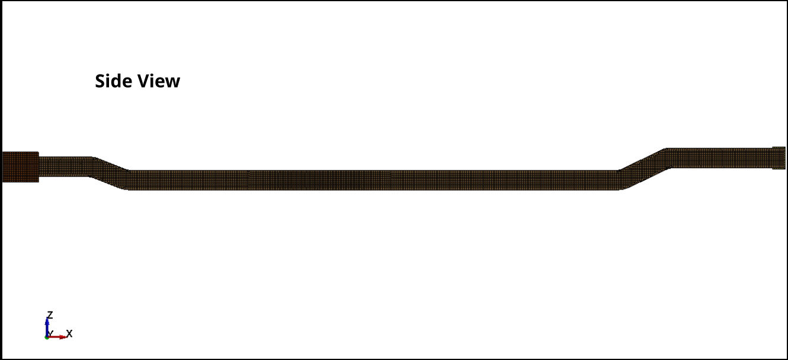
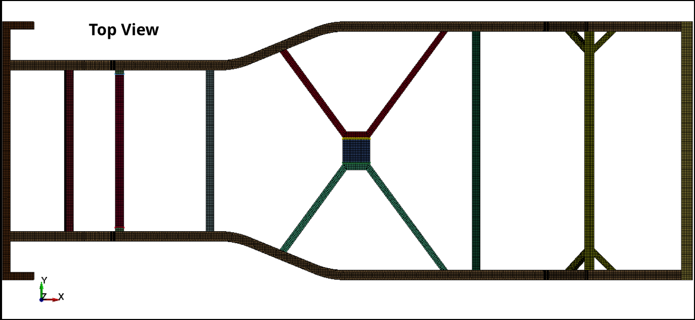
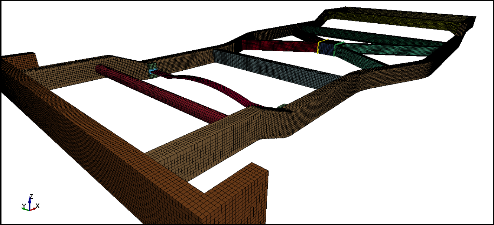
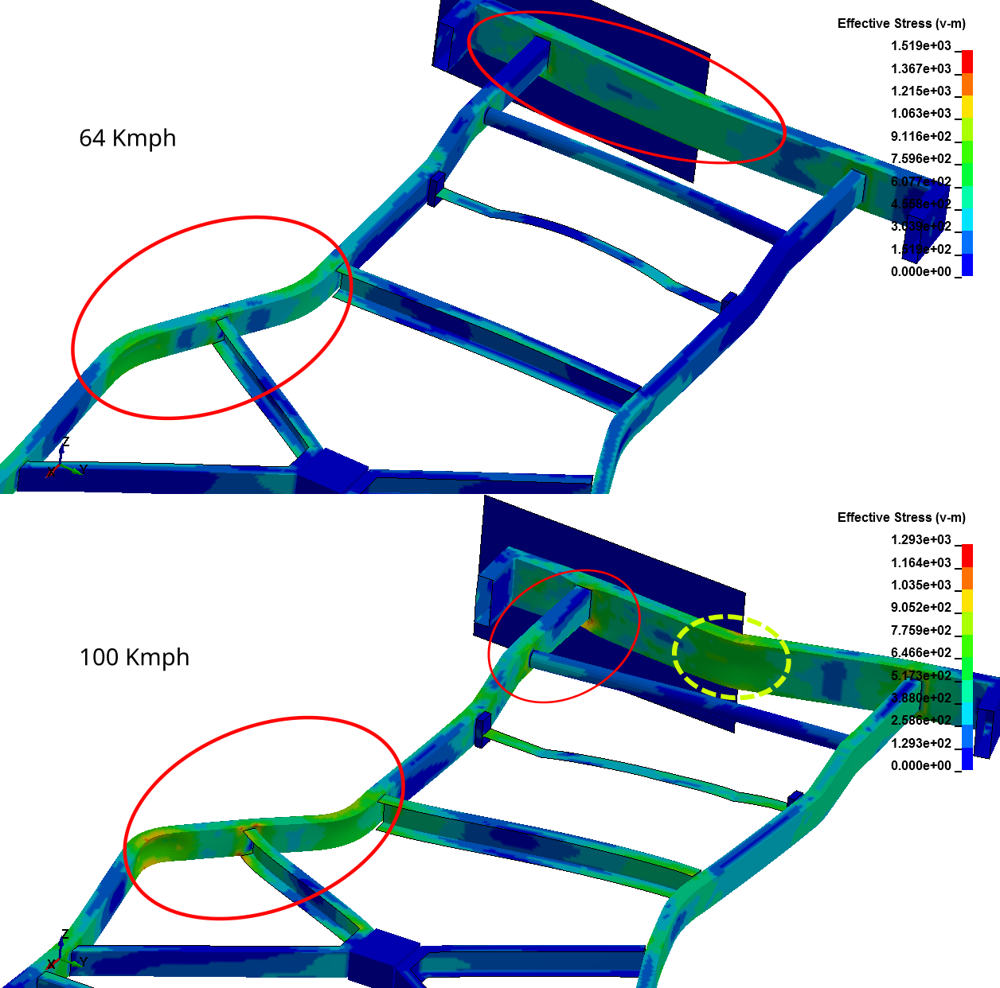
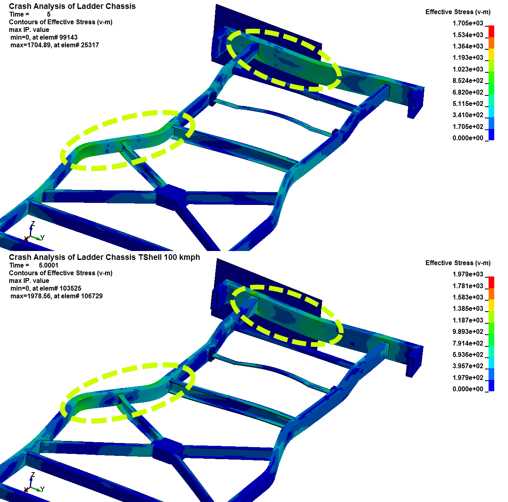
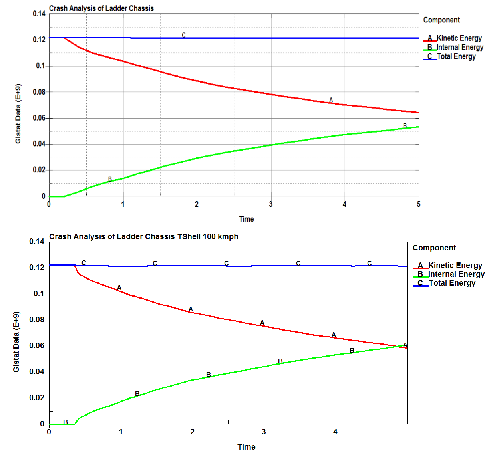

Learnings
This project was an incredible learning experience for me, especially given the constrained computational resources. I gained valuable insights into the complexities of crash simulations and the practical challenges involved in modelling high-speed collisions. Through this project, I learned about ladder chassis design and theory, modelled my own chassis using FreeCAD, and became proficient in setting up crash simulations on LS-Dyna. Completing the pre-processing using LS-PrePost was particularly rewarding. I also understood the importance of the Johnson-Cook material model for high-velocity impact analysis. Overall, this project significantly enhanced my practical knowledge in automotive safety engineering and structural analysis.
Project Gallery





